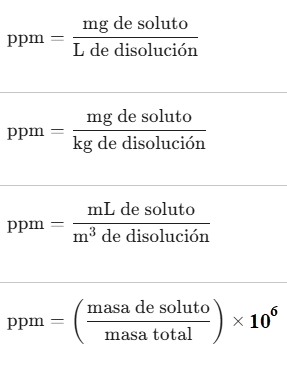

Es una unidad química/física de concentración utilizada para soluciones muy diluidas, que expresa la cantidad de miligramos de soluto que están disueltos en cada litro o kilogramo de solución total.

En donde los miligramos de soluto suelen ser tan diminutos a comparación a los litros o kilogramos de solvente que, es posible (no igual) expresar las ppm como:
" Miligramos de soluto / Litros de solvente "
" Miligramos de soluto / Kilogramos de solvente "
" Miligramos de soluto / Metros cúbicos de solvente "
Con las partes por millón (ppm), podremos hallar:
- Concentración (ppm)
- Masa de soluto (en mg): ppm x Litros de solución
- Volumen de solución (en Litros): Miligramos de soluto / ppm
Responde todas las preguntas del cuestionario.
Tiempo por pregunta:
00:00: